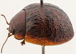
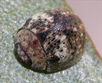
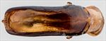
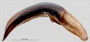
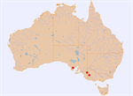
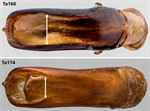

Click on images to enlarge


Male, Nhill, Victoria


Female, Ngarkat N.P., South Australia




Aedeagus, lateral view (Nhill, Victoria)


Distribution


Dorsal view of aedeagi of Ta160 and Ta174
Name
Trachymela sp. Ta160
Reference specimen
2022-080, Nhill, western Victoria.
Adult Description
- Head: uniformly light- to mid-brown with dark-brown or black-tipped mandibles; labrum straw-brown; antennomeres straw-brown, usually uniformly so, sometimes with distal antennomeres (more often only their distal extremity) fractionally darker.
- Pronotum: brown, concolorous with head, sometimes with a small, round, black macula present behind each eye.
- Scutellum: brown, concolorous with pronotum, broadly edged in a darker shade.
- Elytra: brown, concolorous with or fractionally darker than pronotum, disc quite densely scattered with small, wart-like verrucae that are darker than surrounding area and mostly quite evenly distributed, with verrucal rows often difficult to discern, verrucae more concentrated behind antero-median depression where the dark colouration may sometimes merge transversely; anterior portion of VR3 often present as a continuous, black ridge; punctures are concolorous with, rarely fractionally darker than interstices; humeral callus black.
- Venter & Legs: mid-to dark brown with legs of a similar shade, inner thoracic ventrites slightly darker, inside surface of elytral epipleura brown, often fully or partially black in posterior half.
- Cuticular Wax: moderately thick and somewhat uneven layer of greyish wax, tending to brown towards posterior of elytra, with the grey wax often present as isolated spots in the posterior half of disc along VR3, VR5, VR7 and VR9.
Length: ♂ 5.0–5.5 mm (n=3), ♀ 5.6–6.0 mm (n=3).
Colouration:
Morphology:
- Shape: profile strongly and relatively evenly rounded from scutellum to apex, height = 46–50% BL, greatest height viewed laterally is well in front of middle of elytral margin.
- Head: punctures moderately large (pd ≈ 1.5–2× ef) and quite evenly and quite densely distributed. Antennae short, particularly in females (AL/BL: ♂ 38–41%, ♀ 32–33%), filiform.
- Pronotum: almost evenly curved transversely, foveal depression absent or exceedingly shallow with epidermis usually elevated in a small rounded pustule near its centre, discal area with surface usually smooth, rarely slightly uneven, puncturation clearly impressed, evenly distributed and quite dense (spacing ≈ 1.5–2.5 pd), becoming much coarser at lateral margins, some much finer punctures are scattered among the larger ones. Front margins join lateral margins in a smoothly rounded right-angle, with lateral margin initially straight before curving smoothly and gradually towards rear margin.
- Scutellum: punctured throughout, with punctures usually similar in size to or slightly finer than those on the adjacent pronotum, sometimes becoming noticeably finer on the posterior half.
- Elytra: surface slightly unevenly curved with antero-median depression present but quite shallow, punctures mostly distinct and relatively large, closely spaced and evenly distributed over anterior two-thirds of surface, surface more granular in posterior third, with much smaller punctures scattered on the interstices, many small elevated dark verrucae are scattered rather unevenly over much of disc, sometimes two or more verrucae may be joined longitudinally into short ridges, a higher concentration of verrucae present just posterior to antero-median depression, where some may be joined transversely, surface continuous under humeral callus, lateral margin straight or angled upwards anteriorly. Vertical extension of epipleura considerable (HCE/PW = 0.40–0.43).
- Venter: prosternal process with sides almost parallel or narrowing anteriorly, closed anteriorly, very sparsely setose along prosternal process and on mesoventrite, a single seta each on anterior, median and posterior trochanters; front edge of metaventrite beveled, slightly rounded; inner edge of posterior of epipleura with scattered, short setae, rarely completely lacking setae.
Male Genitalia (Aedeagus):
- Dimensions: moderate in length (LPE/BL = 31–34%).
- Dorsal view: sides of shaft approximately parallel-sided with maximum width around middle of ostium from where sides converge smoothly towards apex, tip small and rounded, dorsal surface lightly sclerotized, dorsal ostial processes continuous with the lightly sclerotized surface posteriorly, with sclerotized lateral margins not extending inwards behind ostium, ostium relatively large, a broad patch of setae extending across much of width at anterior of ostium.
- Lateral view: shaft curved through about 55° a little anterior to basal sulcus, then ventral surface lightly and evenly curved towards apex, tip small and slightly deflexed.
Immature Stages
Unknown.
Similar species
- Ta174: within the adelaidae-group of species, this most closely resembles Ta160. Specimens of Ta174 tend to be slightly larger than those of Ta160, and their elytral discal verrucae tend to be less densely distributed. It always lacks the dotted lines of grey cuticular wax in the posterior half of elytral disc. In almost all other characters they are essentially indistinguishable from specimens of Ta160, the main exception being the aedeagus, which in Ta174 is noticeably constricted behind the ostium (see illustration).
Notes
Copyright © 2026. All rights reserved.